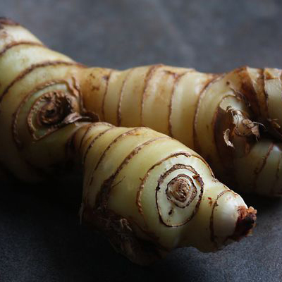

沙嗲 Sata

是一種烤肉串，通常肉以醬汁先醃過再烤。沙嗲的食材可能是切片或切塊的雞肉、羊肉、牛肉、豬肉、魚，其它肉類，或豆腐。沙嗲雖然經常使用竹籤串肉，但比較正統的是以椰子樹葉的梗串肉。沙嗲通常以木材或木炭烤，然後吃時可以再加上各種辛辣的沙嗲醬調味。通常附帶辛辣的花生沾醬，切塊的洋蔥和黃瓜。豬肉沙嗲通常附帶含有鳳梨的沙嗲醬或醃黃瓜。
探索美食背後有哪些特別食材
Slide
沙嗲醬
東南亞的沙嗲醬是含有花生的醬汁，存在大量不同的配方會因地域及文化因素迥異。主要成分是研磨成粉的烤花生（可以花生醬替代），而典型的食譜通常包含花生粉或花生醬、椰奶、醬油、南薑、蒜、辣椒及各式香料等。
南薑
南薑性溫、辛，具有針對鼻子過敏、暖胃、改善腸胃脹氣與手腳冰冷的功效，在中國的本草綱目紀載：南薑以三年為高級品。而南薑常用於泰國菜、咖哩上，是烹調上很棒的去腥佐料，也是在台灣製作沙茶醬的原料。

椰奶
又稱椰漿，從成熟的椰子的椰肉中榨出來的奶白色液體，是一種植物奶，而區別於椰子中原有的半透明香甜味液體。其顏色與濃郁的味道緣於它的高油量與高糖份。椰漿是東南亞與南亞國家重要的食品調味料。
花生
花生的種子含豐富的脂肪（約50%）和蛋白質（24-36%）蛋白質中含有人體所必需的幾種胺基酸，故營養價值甚高，可直接作為食物。相傳是由南美傳入歐洲，後傳到中國又再傳播到東南亞，在各國料理中也被廣泛使用。